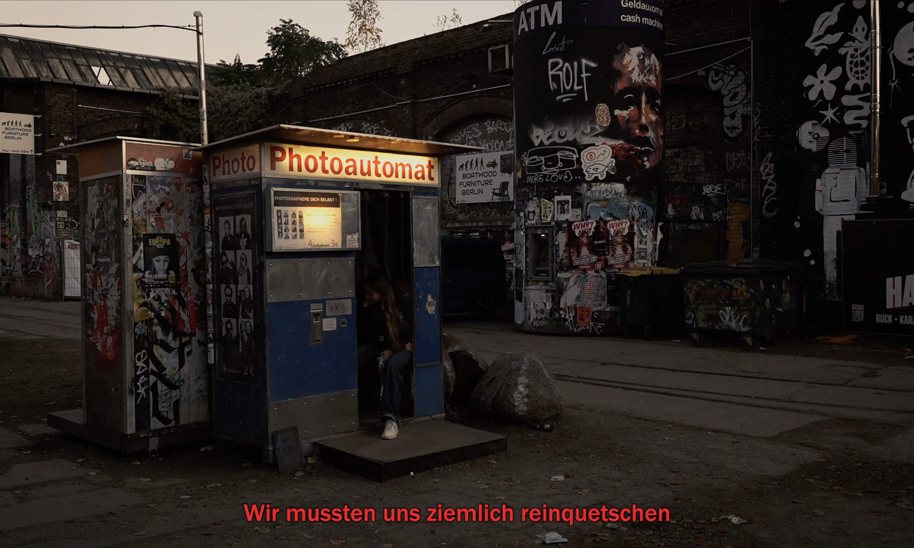
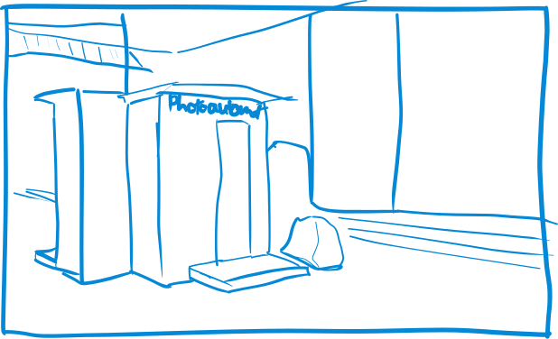
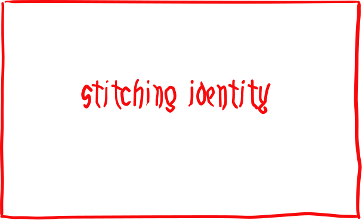
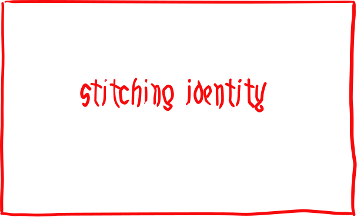

Analoge Erinnerungen
Eine Kurzdoku über analoge Fotoautomaten im Herzen Berlins.
Eine Kurzdoku über analoge Fotoautomaten im Herzen Berlins.
Ein gemütlicher Event mit Indie-Musik und entspannter Atmosphäre. Anschliessend an die zwei Bands schlossen zwei DJ's den Tag ab.
Zusammengenäht war mein erster Kurzfilm rund um das Weitergeben von Fähigkeiten und das Überbrücken von generationalen Grenzen.
 

Das Abschlussprojekt meines Majors, ein Dokumenarfilm über Herkunft und Ausdruck durch Kunst.